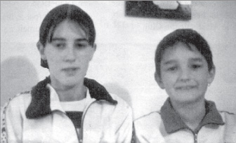

În partea de nord-est a peninsulei Istria, trăiește o populație românească, despre care în țară, în rândurile marelui public, se cunoaște foarte puțin, sau deloc. Aceștia sunt Istro-românii.
știrile despre prezența lor în Istria ca popor apar din prima jumătate a secolului XVI, dar prezența lor, dedusă după nume de localități și persoane, urcă în timp la începutul secolului XIV și chiar mai înainte ("Atto di confinazione" - act de hotărnicie - din 1325 etc.). Nume de persoane care sunt sigur românești - Singurel, Murunt (Mărunt), Radul etc. - apar chiar dincolo de Istria, la apus, în Italia, pe valea râului Tagliamento, în Friulli, încă la 1181, într-un act al unei mănăstiri din Aquilea, descoperit de cercetătorul austriac Von Thaloczy. Așa cum nume românești - Danulus, Negulus, Draculus etc. - se află și în documente notariale din Dalmația încă din secolele IX-XII.
Primul care a afirmat despre această populație din Istria că ea este românească - înrudită după limbă cu Valahii de la Dunăre -, ne-a dat exemple de limba lor și ne-a spus clar că în limba lor ei se cheamă "Rumeri" (de fapt "Rumări," dar vocala "ă" nu poate fi transcrisă de italieni decât cu "e") a fost călugărul carmelitan Fra Ireneo della Croce, în cartea sa "Historia sacra e profana della citta di Trieste," tipărită la Veneția în 1698. Din localitățile indicate în carte, rezultă clar că Istro-românii erau mult mai numeroși decât astăzi, ajungând cu numeroasele lor așezări până la porțile orașului Triest, la Opicina, Trebiciano etc. În secolul XIX, învățatul care pune bazele lingvisticii moderne italiene, Isaia Graziadio Ascoli, cercetează cu mare interes raporturile dintre limba română ("valahă," cum încă o cheamă el) și limba friulană, în lucrarea sa "Sull'idioma friulano e sulla sua affinita colla lingua valacca," din 1846, extinzând studiile sale asupra dialectului român din Istria, în "Studi critici" din 1861 și apoi, după vreo zece ani, mai cu seamă în "Studi ladini," unde face o amplă sinteză asupra legăturilor dintre italiană, română și dialectul român din Istria, cu ladina și dialectul ladin din insula Veglia. Ceea ce este foarte interesant, dar această cale nu a mai fost urmată de nimeni - Matteo Bartoli făcând doar o simplă referință la ea -, este că Ascoli vede în dialectul acestor români din Istria și din insula Veglia, unde la acea epocă se mai vorbea încă istro-română, rămășițele unei limbi române mult mai vechi, pe care o deduce din elementele românești și influența lor asupra limbii dalmate, încă vorbite atunci în insula Veglia și asupra limbii friulane, înrudită cu dalmata, limba maternă a lui Ascoli însuși. Am fost probabil singurul român care am pus în evidență acest fapt, într-o conferință susținută la Universitatea din Roma în 1997, punându-mi întrebarea dacă nu a existat cumva, în partea de nord-vest a peninsulei balcanice, și un al cincilea dialect românesc, astăzi dispărut și complet necunoscut, ale cărui urme s-ar putea eventual cerceta din puținele cuvinte în limba dalmată rămase în actele notariale din secolul XIII în Dalmația și, bineînțeles, din textele culese de Matteo Bartoli la 1898, în insula Veglia, de la Anton Udina burbur. La jumătatea secolului XIX, Istro-românii ajung în Batenția unor învățați italieni din Triest și din Istria, printre care Pietro Kandler, care se ocupă cu multă dragoste de ei - în evenimentele revoluționare de la 1848, din simpatie pentru aceștia, se îmbracă în portul lor și se declară chiar Istro-român! - și Antonio Covaz, care tipărește la 1846, în revista "Istria," prima povestire în dialect istro-român, culeasă de la ei, "Greerul și furnica".
La anul 1857, marele patriot Ioan Maiorescu, primul nostru filolog, tatăl lui Titu Maiorescu, face o călătorie în Istria, în satele lor, pentru a-i cunoaște la fața locului, și rod al acestui voiaj este cartea de mare interes, intitulată "Itinerar în Istria," reapărută, după cât sunt informat, într-o nouă ediție, în anul 2004. Primul istro-român, care face școală românească, este Andrei Glavina, adus în țară de patriotul profesor de la Universitatea din Iași, Theodor Burada, în 1894. Andrei Glavina, născut la Sușnievița în 1881, începe școala românească la Iași, apoi continuă și termină școala normală la Blaj, citadela românismului transilvan și se întoarce în Istria, unde funcționează ca învățător la școala italiană de la Santa Domenica di Albona, până în 1919.
Încurajat de autoritățile italiene, în noile condiții de după primul război mondial, când Istria intră a face parte din Italia, Andrei Glavina, cu sprijinul direct al autorităților și al prefectului Ubaldo Scampicchio – prieten și al lui Th. Burada -, înființează noua comună Valdarsa, care adună la un loc pe toți Istro-românii de la sud de Monte Maggiore - azi, Učka - și înfăptuiește marele său vis, deschiderea primei școli din Istria, cu limbă de predare română, în comuna cu regim bilingv, Valdarsa (Sușnievița), în 1921. Din păcate, soarta este nemiloasă cu dânsul. Slăbit de eforturile pentru înființarea noii comune și deschiderea școlii românești și mai cu seamă de continuele șicane ale societății slave "Sfinții Ciril și Metodiu" - care în 1887, 1888 și 1904 s-a opus deschiderii de școli românești, petiționate de locuitori, la Sușnievița și Jeiăn, impunând școala slavă -, bolnav de tuberculoză, Andrei Glavina se stinge din viață în februarie 1925, la numai 43 de ani.
Astfel, școala românească de la Sușnievița (Valdarsa), care a funcționat doar patru ani, își încetează existența, din cauza lipsei unui învățător român. Statul român, lipsit de orice sentiment și patriotism față de această populație, atunci ca și acum, nu a făcut nimic, asistând impasibil la dispariția ei. Doar din inițiativa personală a profesorului Sever Pop, de la Universitatea din Cluj, sunt aduși, zece ani mai târziu, în 1935, doi copii istro-români, unul din Jeiăn, Giovanni Doričić, altul din Sușnievița, Domenico Cvecici, care sunt înscriși la școala normală din Blaj, pentru a-l înlocui, la terminarea ei, pe Andrei Glavina, în satele lor de origine; dar războiul spulberă aceste planuri, Giovanni Doričić moare la Blaj în 1994, iar Domenico Cvecich trăiește încă la București.
Comuna bilingvă Valdarsa a mai ființat până în 1944, când în Istria au intrat partizanii iugoslavi ai lui Tito, iar odată cu venirea lor s-a instaurat noul stat comunist Iugoslavia, ștergând orice urmă a realizărilor lui Andrei Glavina și negând orice tutelă pentru această populație. Astăzi, Istro-românii, care în deceniile interbelice (1920-1940), erau, după statisticile oficiale ale timpului, între 3.000-3.500 de oameni, au rămas foarte puțini, doar vreo câteva sute, care-și mai vorbesc limba, în satele lor de baștină, Sușnievița (Valdarsa, în timpul administrației italiene), cu câteva mici așezări în jurul ei și Jeiăn, la circa 40 de km la nord.
Primele călătorii în satele istro-române, începute de subsemnatul în 1990 împreună cu Prof. Carlo Lavacek, praghez stabilit în Elveția și pasionat cercetător al românilor de la sud de Dunăre, continuate apoi cu inimosul triestin Ervino Curtis, șef al Departamentului pentru relații internaționale al portului Triest, apoi cu istro-românul Corrado Clagnaz (Clănaț), au dus în 1994 la înființarea la Triest a Asociației culturale istro-române "Andrei Glavina," al cărei scop statutar este conservarea dialectului și identității Istro-românilor. Printre alte activități, asociația a editat prima publicație în dialect istro-român, "Scrisore către fraț rumer," redactată de subsemnatul, din care au apărut nouă numere, distribuite în majoritate în Istria.
În anul 2000, ca urmare a atmosferei de regăsită libertate din tânărul stat Croația, înființat după destrămarea federației iugoslave, s-a ținut primul congres istro-român, la Universitatea din Pola (30 martie - 1 aprilie), cu sprijinul decanului acestei facultăți, prof. Goran Filipi și al autorităților croate, reprezentate de asesorul cultural al provinciei Istria, dl. Mladen Dusman, care a finanțat în mod generos această manifestare. A răsunat atunci, pentru prima oară, într-o aulă academică, primul discurs ținut în grai istro-român. Promisiunile responsabililor guvernamentali ai Departamentului pentru Românii de peste hotare, care au participat la acest congres, au fost însă imediat uitate după congres, ceea ce a dus la schimbarea atitudinii populației locale față de aceste autorități și, din păcate, vai, și față de România, compromițând toată lunga activitate a membrilor asociației "Andrei Glavina," de insuflare a dragostei și respectului față de țară. Cursurile de vară de limbă, istorie și geografie a României, pe care subsemnatul am cerut și m-am oferit să le țin în mod voluntar în cele două sate istro-române, conform unui protocol de parteneriat semnat la Pola, au rămas după două săptămâni, odată ajunși reprezentanții guvernamentali la București, literă moartă, fără nici un răspuns și nici un demers din partea lor. Ca, de altfel, toate cererile de traducere în viață a prevederilor tratatului româno-croat din 1994, referitor la schimbul de profesori pentru elevii minorităților din cele două țări sau a prevederilor "Cartei europene a limbilor regionale sau minoritare," adresate în repetate rânduri acelorași autorități, din 1994, în favoarea istro-românilor.
În această situație, este uimitor să asistăm la apariția primelor producții literare, într-un dialect care se stinge. Acestea sunt primele poezii scrise în dialect istro-român, trimise spre publicare în 1997 revistei "Scrisore către fraț rumer," ca urmare a invitației acesteia de a i se trimite texte în istro-română. Autorii acestor poezii sunt doi tineri din Sușnievița, satul Noselo, atunci aproape încă copii: Gabriela Vretenar, care avea 15 ani, și fratele ei, Gabriel, în etate de numai 12 ani. Nimeni în România sau la Ambasada română de la Zagreb - ambasadorul din acel timp afirma că la Sușnievița au mai rămas doar... un moș și o babă - nu s-a ocupat de soarta acestor copii. Singură, asociația "Andrei Glavina" a făcut la Triest o serbare în onoarea lor, în localul asociației "Unione degli Istriani," iar subsemnatul i-a răsplătit pe fiecare cu un premiu; ulterior, poeziile lor au fost publicate și în prestigioasa revistă "MicRomania" din Belgia.
În anul 2003, la solicitarea asociației "Andrei Glavina," adresată postului TVRI (TV România Internațional), acesta, prin doamna directoare Monica Zvirjinschi, a răspuns prompt, trimițând în Istria, la carnavalul Istro-românilor din Jeiăn, o echipă TV condusă de domnii Marian Voicu și Lucian Ionică, care au desfășurat o meritorie activitate, înregistrând desfășurarea carnavalului, în paralel cu o echipă TV din Arad, sosită cu președintele Asociației învățătorilor și cu directorul cultural al județului; de asemenea, a fost înregistrat un interviu cu scriitorul de origine istro-română Ezio Mestrovich, despre recentul său roman "A Fiume, un'estate" ("O vară la Fiume"), ale cărui personaje sunt în cea mai mare parte istro-români, precum și cu alt scriitor istro-român, Ezio Bortul, care a publicat, în 2002, povestea "Vlahi".
Lipsește însă cu desăvârșire voința politică la nivelul Ministerului de Externe și a Departamentului pentru Românii de peste hotare, de a se conferi un cadru juridic pentru tutela lingvistică, prin școală, a acestor oameni, conform normelor "Cartei europene a limbilor regionale sau minoritare" sau a Tratatului româno-croat din 18 februarie 1994. Fără un cadru legislativ corespunzător, de tutelă lingvistică prin școală, cerut de asociația "Andrei Glavina" la București, la Zagreb, la întruniri ale Consiliului Europei cu asociațiile nonguvernamentale, la Innsbruck (1999), Haga (2001) și la congrese ale UFCE (Uniunea federativă a Comunităților Etnice Europene) - dintre care ultimul la Subotica, în Iugoslavia, în 2002 -, nu se poate realiza nimic, căci puterea de decizie este în mâinile politicului și nu ale unei asociații nonguvernamentale, care poate doar propune. Din păcate, reprezentanții noștri guvernamentali au numai vorbe frumoase, neurmate de fapte, trădând lipsă totală de interes și dragoste față de minoritățile românești. De aceea, asemeni unor mlădițe lipsite de dragoste și lumină, încercările literare în dialect istro-român, ca acelea ale fraților Vretenar, riscă să fie și ultimele.
În 1926, Sextil Pușcariu scria: "Ca o inimă se profilează pe albastrul Mării Adriatice provincia Istria. În această inimă curge și sânge românesc". Astăzi, riscăm să scriem, foarte curând, "în provincia Istria nu mai curge sânge românesc"...
Păsările
Gabriela Vretenar
Toate păsările noastre
Cântă frumos,
Mai frumos decât norodu’
Între ele glumesc.
Toate păsările au
Cele mai frumoase pene
În Africa merg
Un pic în concediu.
Toamna merg
Cu primăvara se întorc
Aur prețuiesc
Când cântă.
Toate acolo nu merg
Unele și acasă rămân,
Concediu-l folosesc
În locul natal.
Istria mea
Gabriel Vretenar
Mă întorc în Istria
Pământul natal
A viilor și holdelor
A pădurilor verzi.
Acum în Istria
Eu mă întorc
Vorba de acasă
și cântecul să aud.
Mă întorc în Istria
În cel mai frumos loc
Unde pârăul murmură
și păsările cântă.
În inimă ai fost
Mereu iubită
Nicicând uitată
Frumoasă Istria mea.
Emil Petru Rațiu
January 11, 2005
© 2005 Adevărul Literar și Artistic